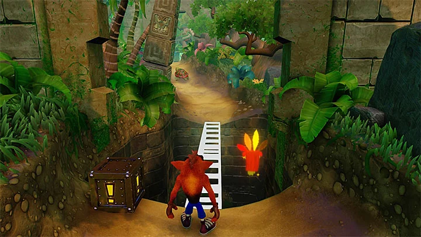
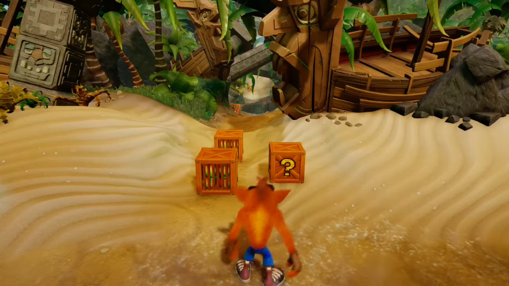
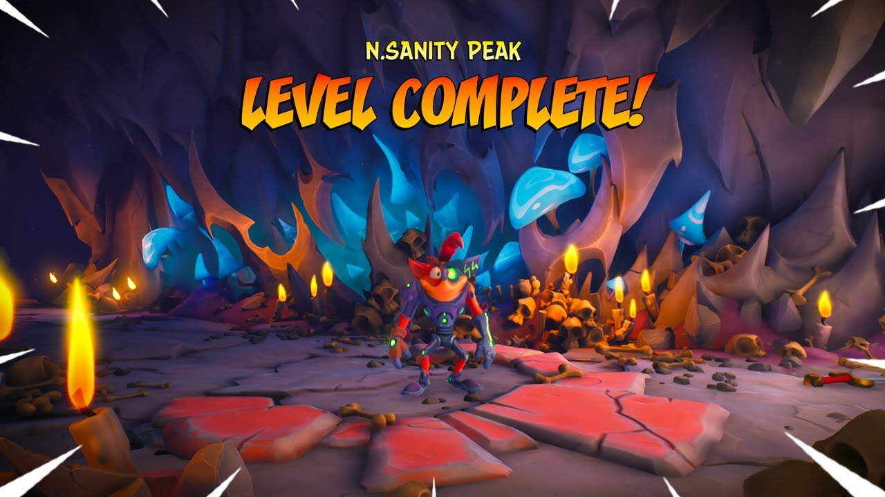
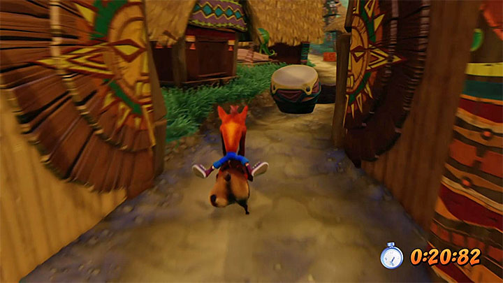

N. Sanity Island Screenshots
There is analogue control across every game, although I'd recommend using the D-pad for more precise platforming in certain sections, such as side-scrolling stages where you rarely need to move back and forth. When playing through each stage, don't worry about being a completionist first time. For example in the original Crash most stages require Gems before you can get every crate - most of which unlock in the second half of the game - while time trial Relics can only playable after you've finished a stage. Completing Crash 2 and 3 will reward you with Speed Shoes, which will make going back to earlier levels and aiming for the tougher Relics much more manageable. There's none for completing Crash Bandicoot 1, however. Learning to watch your shadow will be pivotal in knowing exactly where you are going to land, especially when it comes to bouncing off lines of crates above deadly chasms or dropping down onto thin ledges - both of which you'll be doing often. Make good use of the slide-jump that's introduced in Crash Bandicoot 2, by running, crouching to skid, then jumping again to jump a little higher than usual. It's pivotal for getting the blue Gem in Crash 2, as well as other challenges. Entering bonus stages are a great way of getting bonus lives, and are required for finding every crate. Crates can be found everywhere, so bounce off them to try and look off screen by bouncing from them, run round corners and behind walls, and anywhere that looks suspicious. If the crate rundown at the end of a stage is taking too long, just hold one of the face buttons to speed it up. If you're low on lives then going back the first few stages of each game is safe way to get a handful each time.
   